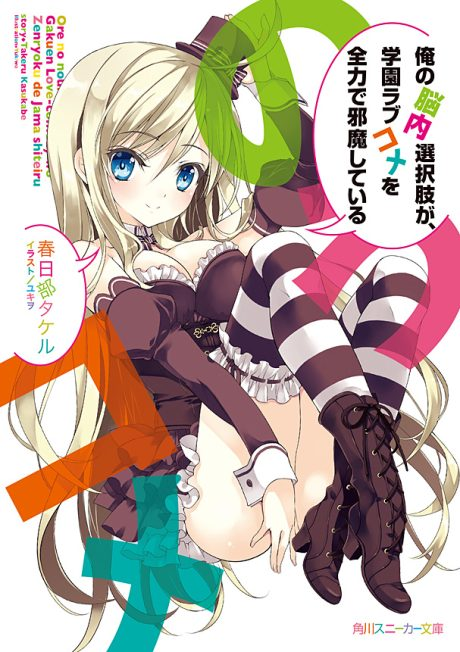

My Mental Choices Are Completely Interfering With My School Romantic Comedy
俺の脳内選択肢が、学園ラブコメを全力で邪魔している
Kanade is cursed to always pick from embarrassing multiple-choice options that appear in his head.
We haven't found where the anime ends in the light novel yet.
6.7AniList score
—Animeter, no votes yet
10episodes
Rate it or report where you stopped
Is it worth pushing through?
Built from what visitors report across all 10 episodes.
Loading reports…Checking what other people said about this one.
Sign in above with your email to add your report.
More like My Mental Choices Are Completely Interfering With My School Romantic Comedy
 Original6.5
Original6.5
 Unclear6.7
Unclear6.7
 Manga Ch. 707.1
Manga Ch. 707.1
 Manga Ch. 368.0
Manga Ch. 368.0
 Manga Ch. 486.9
Manga Ch. 486.9
 Manga Vol. 46.2
Manga Vol. 46.2
 Unclear7.3
Unclear7.3
 Unclear6.7
Unclear6.7
 Manga Ch. 827.3
Manga Ch. 827.3
 Manga Ch. 346.3
Manga Ch. 346.3
 Unclear7.6
Unclear7.6
 Unclear6.4
Unclear6.4